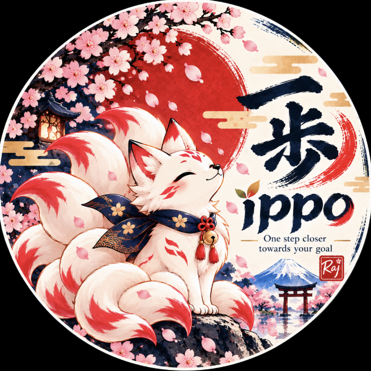

JLPT TRAP · SAME SOUND
1/11
@raj_in_jp
SAME SOUND.
DIFFERENT
KANJI.
The JLPT tests this. Can you pick? 👀
あう
6 sounds · 15 kanji · 1 trick each
swipe →
JLPT TRAP · SAME SOUND
2/11
@raj_in_jp
Why this matters
The JLPT shows a word in hiragana
and asks you to choose the kanji.
問題 Choose the correct kanji.
駅で友だちに あう。
① 会う② 合う③ 遭う
Every option sounds the same.
Only the meaning picks the answer.
swipe →
JLPT TRAP · SAME SOUND
3/11
@raj_in_jp
あう
1 sound · 3 kanji
会う
meet a person
駅で友だちに会う。
I meet a friend at the station.
🔑 会 = meeting → 会社, 会議
合う
fit · match
靴のサイズが合わない。
My shoe size doesn't fit.
🔑 合 = fit → 合格 (pass)
遭う
run into trouble
帰り道で事故に遭った。
I had an accident on the way home.
🔑 ⻌ = road → trouble on the road
swipe →
JLPT TRAP · SAME SOUND
4/11
@raj_in_jp
はやい
1 sound · 2 kanji
早い
early (time)
朝早く起きる。
I wake up early.
🔑 日 sun on top → time of day
速い
fast (speed)
新幹線はとても速い。
The shinkansen is very fast.
🔑 ⻌ = moving → speed
swipe →
JLPT TRAP · SAME SOUND
5/11
@raj_in_jp
あつい
1 sound · 3 kanji
暑い
hot weather
今日は暑いですね。
It's hot today, isn't it?
🔑 日 sun on top → weather
熱い
hot to touch
このお茶は熱い。
This tea is hot.
🔑 灬 fire at the bottom → things
厚い
thick
厚い本を読んでいる。
I'm reading a thick book.
🔑 not temperature at all!
swipe →
JLPT TRAP · SAME SOUND
6/11
@raj_in_jp
はかる
1 sound · 3 kanji
計る
time · numbers
時間を計る。
I time it.
🔑 計 → 時計 (clock)
測る
length · height
部屋の長さを測る。
I measure the room's length.
🔑 測 → 測定 (measurement)
量る
weight · amount
体重を量る。
I weigh myself.
🔑 量 = amount → 分量
swipe →
JLPT TRAP · SAME SOUND
7/11
@raj_in_jp
とる
1 sound · 3 kanji
取る
take · get
メモを取る。
I take notes.
🔑 the everyday 'take'
撮る
take a photo/video
写真を撮る。
I take a photo.
🔑 撮 → 撮影 (filming)
採る
hire · pick
新しい社員を採る。
We hire new staff.
🔑 採 → 採用 (hiring)
swipe →
JLPT TRAP · SAME SOUND
8/11
@raj_in_jp
かえる
1 sound · 2 kanji
帰る
go home
家に帰る。
I go home.
🔑 帰 → 帰国 (return to your country)
変える
change
予定を変える。
I change my plans.
🔑 変 → 変化 (change)
swipe →
QUICK TEST
9/11
@raj_in_jp
Your turn ✍️
Pick the right kanji.
2
マラソンの時間を はかる。
Ⓐ 計るⒷ 測るⒸ 量る
3
旅行で写真を とった。
Ⓐ 取ったⒷ 撮ったⒸ 採った
Comment your answers 👇 (like 1A 2B 3C)
swipe →
SCREENSHOT THIS 📸
10/11
@raj_in_jp
The cheat sheet
あう
会 person · 合 fit · 遭 trouble
あつい
暑 weather · 熱 touch · 厚 thick
はかる
計 time · 測 length · 量 weight
とる
取 take · 撮 photo · 採 hire
Person? Time? Speed? Weight? → pick the kanji.
swipe →
NIHONGO × JLPT
11/11
@raj_in_jp

Save this for
exam day 📌
Part 2 next: more JLPT traps.
Free JLPT notes → link in bio